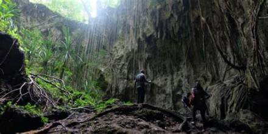

Video Dokumenter Pulau Biak
Galeri Destinasi



Kegiatan yang di tawarkan:
- Trip Ke Biak Timur - Utara - Barat
- Menjelajahi Bawah Laut
- Kunjungan ke Tempat Bersejarah
Aktivitas Menarik:
- Menikmati Keindahan Alam di Pantai Anggopi
- Snorkeling dan Melihat Keindahan Alam di Padaido
- Mengunjungi Tempat Bersejarah Goa Binsari
- Perjalanan ke Batu Pica
Lokasi & Akses
Lokasi: Kabupaten Biak Numfor, Provinsi Papua, Indonesia
Akses: Dapat dicapai menggunakan pesawat melalui Bandara Udara Internasional Frans Kaisiepo atau Melalui Pelabuhan menggunakan Kapal Pelni, dll.
Data Jarak Tempuh Destinasi dari Pusat Kota
| destinasi | waktu tempuh (menit) | wilayah | biaya perjalanan |
|---|---|---|---|
| goa binsari | 15 | biak timur | Rp. 50.000 |
| pantai bosnik | 60 | biak timur | Rp. 150.000 |
| pantai batu pica | 90 | biak utara | Rp. 150.000 |